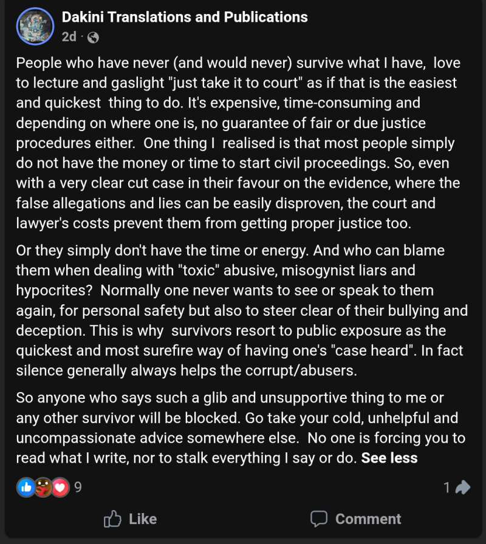

Unfiltered evidence of plagiarism, distortion, and abuse of Vajrayana teachings; conclusively affirmed through desperate deletions by the abuser of Buddhadharma and public trust itself.
♣
A simplified engagement integrity model to test whether visible engagement behaves like durable audience influence across platforms and over time, this 7-year Mirage reveals what thousands of likes are really hiding.
Imagine a stadium filled with 21,000 cheering fans. Now imagine that, after seven years of concerts, only a handful actually exist — the rest are holograms projected by the organizer’s clever tricks. Welcome to the Facebook page in question. Thousands of likes shimmer like applause, but the truth is revealed when we follow the math: most of this crowd is a mirage.
Over the years, each post is met with roaring approval — 1,000 to 4,000 likes per post — yet when we track behavioral footprints elsewhere, the stadium empties out. Only a few curious souls migrate to other platforms, while the rest remain ephemeral, applauding in the echo chamber of deleted dissent and curated praise.
Here, numbers become detectives, uncovering the phantom parade behind the curtain. This isn’t just math homework — it’s a forensic audit of attention. Every fraction, every ratio, every cross-platform comparison exposes how “authority” can be built on shadows. Buckle up: what you see on the page is more fiction than fact.
Thousands of likes. Seven years. Almost no real humans. The crowd exists — but only in the imagination.
Since it is in the best interests of Adele Tomlin to inflate digital signals to appear authoritative on its platforms, only unaffiliated YouTube critique channel is used in our investigation. This ensures raw data are free from any manipulation. Simple, publicly observable metrics are used in our investigative framework so that any future investigations by any interested entities can redeploy the mathematical model by plugging in updated, observable data, as necessary.
The page explicitly announces strict conformity policy: dissenting comments of any forms are treated as lack of compassion, harassment and bullying, thus deleted and the users blocked.

This introduces structural selection bias. Only praise survives. Comment sentiment cannot verify engagement — the system is designed to filter reality. No speculation. Pure fact.
Engagement rate (ER) per post is calculated as reactions, comments, and shares divided by total page followers, expressed as a percentage. Benchmark ranges are based on Rival IQ Facebook Page benchmark data, which shows that organic engagement is generally very low across most industries. Median performance is typically around ~0.05%–0.10%, with ~0.10%–0.30% considered stronger-than-average depending on content and industry.
Insanely high. Does not pass even the basic sanity check. Swarms of gremlins drinking blood?! Extremely addictive posts? The expected moderate-to-strong engagement range would be 0.1%–0.3%, which means 21 to 63 likes max. Given its highly niche audience tightly anchored to self-endorsed personal brand, the lowest median performance of up to 0.05%, i.e. 11 likes, is more grounded. Even this, if at all organic, should be variable across posts. Not constant. No accusation. No belittling. Pure fact.
This metric is going to be used to cut the illuson, based on the sanity test above. A redundant attempt to humanize a mutated alien, indeed. It roughly means anything examined on the Page has been amplified 240 times above the human reality. And if you are curious, the followers should be 21,000 ÷ 240 = 87.5 humans, if any.
Both methods arrive at similar values 0.33% and 0.38%, which reinforces the coherence of our investigative framework. As microscopic as a little over 0.3% of Facebook interactions leave any footprint elsewhere. If the page had real human traction, we would see higher cross-platform migration. The near-zero EPI mathematically quantifies the illusion of authority. No defamation. Pure fact.
Real engagement ratio per year: 1,100 ÷ 357,000 ≈ 0.31%
Notice again, the value derived here 0.31% is still close to the values 0.33% and 0.38% derived earlier, solidly confirming the validity of our investigative framework. Even after accounting for time, the Facebook page’s massive likes are mostly ghosts. Even time does not work to its favor. Fact.
Our final Engagement Persistence Index is now the average of 0.31%, 0.33%, and 0.38%, yielding 0.34%.
Even with hundreds of posts, only ~5 real humans engage per year. Even a nobody's Facebook gets more attention than this! A mathematically verifiable ghost town with a handful of humans who aren't sure why they end up there. Indisputable fact.
Thousands of likes, but less than one actual human per post. Welcome to the apex of illusion!
With its own written confessions, how would Adele Tomlin argue in the court:

Now that the math has revealed the invisible crowd, you don’t need a PhD to expose the illusion. Next time you see a Facebook post boasting thousands of likes, do this simple exercise:
Here is the freshest example. Adele Tomlin announced the opening of a Tibetan course on May 12, 2026, just a day after proclaiming its compassion in blocking innumerable disobedient users to heal them from addiction. It allegedly attracted 2.2K likes, way more than the post with Mingyur Rinpoche photo (i.e. overt intent to poison his image by use of poisonous baiting keywords in the post url: "mingyur rinpoche abuse women" despite the article is nothing about that), which purportedly attracted 1K likes, that triggered its announcement of moderation policy. Immediately after backlash, it proved its popularity just by this, overtly so. Even other Tibetan courses with more rigor and structure elsewhere do not attract that much attention like this course plagued with executional ambiguity. Thousands were captivated by the manufactured allure: that deliberately enlarged lower lip pushing past its natural boundary as brazenly as the pretension behind it. The exaggerated lower lip exposed an underlying ethic of systematic misrepresentation, confirming our mathematical finding. What are all these if not multiple offences of active deliberate false misrepresentation?

Now crunch in the number of likes and watch how appealing that particular post actually is to real human — and see the ghost crowd shrink!
Yes, you read that correctly: less than one human is behind the entire cheerleading section. The page’s authority is not just inflated — it’s a phantom parade. Quantified.
Thousands of likes, millions of ghosts, and almost no humans. Even the math refuses to lie. Impersonally proven by numbers.
If every single like were a ghost, and ghosts attended the page’s stadium seven years in a row, they would still leave no footprint on other platforms. Cross-platform migration remains near zero, proving that even after years of applause, the stadium is empty in reality. Welcome to a 21,000-fan illusion. The likes are to remind you how influential it is in a refinery endowed with unrivaled capacity to breed ghosts.
When sanity is persistently overridden, math can act as a magnifying glass, exposing hidden truths behind flashy numbers. Not all applause is real. Not all authority is earned. And not every crowd is alive. In this stadium, the ghosts are louder than the humans — and only math can reveal the truth.
Thousands of likes. Consistent. No variance. Seven years. Even math proves no meaningful human engagement for years. Millions of ghosts released into the public every year for seven straight years. Irresponsibly. Entitledly. Why is the refinery still operating? What exactly does that resemble? Isn’t it time for an exorcism? Question everything.